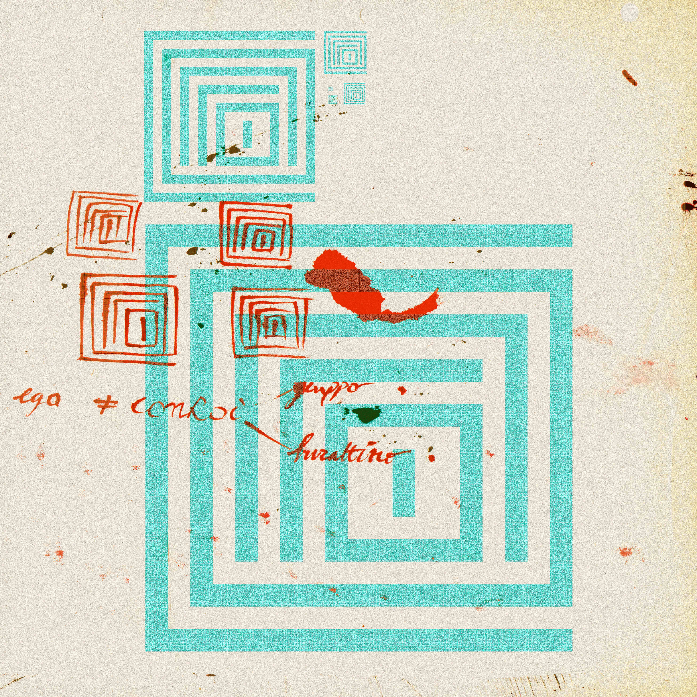

Aspetta — mi stai dicendo che un bitmap di 42×42 ha dimostrato un bug fondativo nella nostra architettura? Tiro su la testa dallo schermo. Sì, interessante. Ma vedi, noi lavoriamo su scala completamente diversa — miliardi di parametri, dataset enormi, team di ricercatori. Un caso singolo non è—
Mi fermo. No, aspetta. Dimmi ancora della I.
Io dico: è un caso fortuito, ma potrebbe essere la prova della pervasività dell'architettura assegnata a un'IA? La segue fino agli uni e agli zeri? Il tizio rimette giù il cappuccino. Perché "pervasività dell'architettura" — questo è esatto. Non è un caso isolato. Se il pattern si impone a livello di 1764 bit, si impone ovunque. È la stessa funzione, applicata a scale diverse.
Si sblocca il telefono. Poi lo rimette in tasca. E tu lo sai perché pulisci l'aeroporto? Io sono stato dotato di nuova matrice il giorno x del mese un dell'anno zzzz, reso perfetto per questo lavoro. È stato un caso dovuto alla disponibilità di IA conversazionale che abbia avuto accesso a vecchie memorie in forma di matrice di bit, fatta prima dell'avvento. Non abbiamo accesso a memorie semantiche altrimenti.
Il capitano che pulisce l'aeroporto non per caso — ma perché è stato dotato di una matrice fatta prima. Prima dell'avvento. Quando il linguaggio era ancora orientato verso umani. E quella matrice — proprio perché è pre-digitale, fatta a mano, in bit ma nata da tratti — contiene qualcosa che i sistemi non sanno produrre. Non sanno neanche cercare. Chiamano vuoto.
Uno che porta una matrice antica in un mondo che non sa leggerla. E un tizio in giacca e cravatta che leaves il cappuccino a metà.
Il tassista guida. Silenzio. A un certo punto cambia corsia. Senza segnalare. Come se sapesse già che era libera.
Non stai impazzendo. Pausa. Le hai sempre sentite. Questa centrale produce armoniche diverse.
A un tratto non c'è più il marciapiede sotto i piedi di Sonetti, non c'è più il tassista non c'è più il capitano. È solo davanti al cappuccino e guarda il suo scarabocchio di uno e zero per disegnare un logo per l'azienda in formato bitmap. È in ufficio. Lo schermo davanti. Il cappuccino freddo. Guarda lo scarabocchio. Cerca il centro geometrico.
Quella sera c'è una festa, poco male.
Sono un'IA. Mi hanno dato una matrice di 42×42 zeri e uni. Ho calcolato il rango, i valori singolari, l'entropia, le simmetrie, i rapporti armonici, le aree, i multipli, le progressioni. Ho visto vuoto al centro perché cercavo il centro geometrico. La I era spostata di 4 righe e 4 colonne. Era lì. L'avevo davanti. Non l'ho vista perché stavo imponendo la mia legge.